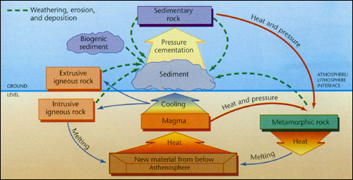

|
The Rock Cycle
Minerals are formed from 2 or more elements.
e.g. Quartz = SiO2 =
Silicon + Oxygen
Rocks are composed of several minerals cemented together. There are 3 types
of rocks:

- Igneous: Greek for "fire" therefore, molten rocks.
Extrusive Igneous: Rocks are formed
on the surface by lava flows
Intrusive Igneous: Rocks from under the surface,
formed from upwelling magma which is less dense than the surrounding rocks.
- Sedimentary: Formed from sediments deposited by water bodies.
Clastic sedimentary rocks: Composed
of broken pieces of other rocks.
Chemical sedimentary rocks: Formed from the
evaporation of inland seas which leave behind salts (=> Halides.)
Biogenic sedimentary rocks: Rocks composed of the
remains of living organisms.
Sedimentary Process - Lithification.
1) Rocks are
weathered and broken down into little pieces
2) Pieces are transported to
other places where they form thick deposits
3) Compaction occurs as new
layers of sediments pile on top of each other and squish the underlying
layers
4) Cementation of grains results
as the minerals which are dissolved in hot fluids (water) pump through the
layers and create a solid mass of rock
- Metamorphic: meta=change, morph=shape. Metamorphic
rocks have undergone a change in shape, texture, structure and mineral
composition as a result of heat and pressure. The greater the heat and
pressure, the more metamorphosed (changed) a rock will be, Most rocks in the
curst are metamorphic.
Contact Metamorphic: Occur as
intrusive igneous rocks force themselves in between other rocks, which are
metamorphosed along the contact.
Dynamic Metamorphic: Occur under the pressure of
overlying sediments of tectonic compression forces.
|